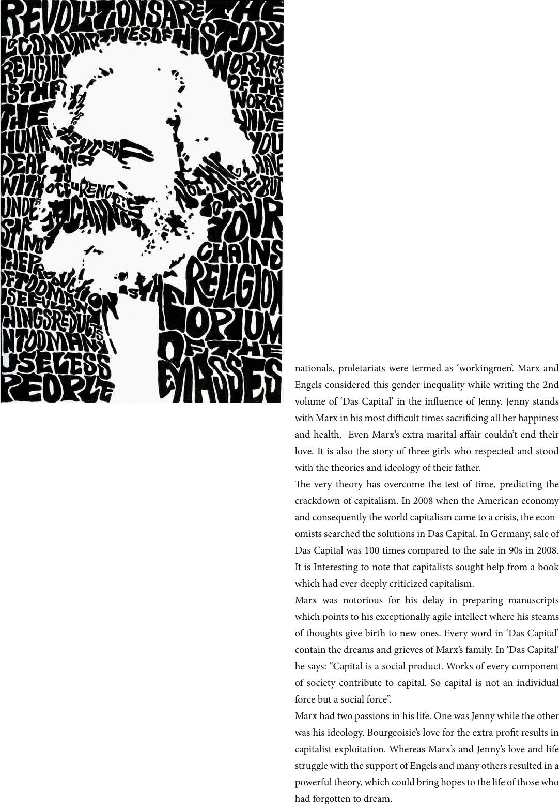

nationals, proletariats were termed as ‘workingmen’. Marx and
Engels considered this gender inequality while writing the 2nd
volume of ‘Das Capital’ in the inuence of Jenny. Jenny stands
with Marx in his most dicult times sacricing all her happiness
and health. Even Marx’s extra marital aair couldn’t end their
love. It is also the story of three girls who respected and stood
with the theories and ideology of their father.
e very theory has overcome the test of time, predicting the
crackdown of capitalism. In 2008 when the American economy
and consequently the world capitalism came to a crisis, the econ-
omists searched the solutions in Das Capital. In Germany, sale of
Das Capital was 100 times compared to the sale in 90s in 2008.
It is Interesting to note that capitalists sought help from a book
which had ever deeply criticized capitalism.
Marx was notorious for his delay in preparing manuscripts
which points to his exceptionally agile intellect where his steams
of thoughts give birth to new ones. Every word in ‘Das Capital’
contain the dreams and grieves of Marx’s family. In ‘Das Capital’
he says: “Capital is a social product. Works of every component
of society contribute to capital. So capital is not an individual
force but a social force”.
Marx had two passions in his life. One was Jenny while the other
was his ideology. Bourgeoisie’s love for the extra prot results in
capitalist exploitation. Whereas Marx’s and Jenny’s love and life
struggle with the support of Engels and many others resulted in a
powerful theory, which could bring hopes to the life of those who
had forgotten to dream.